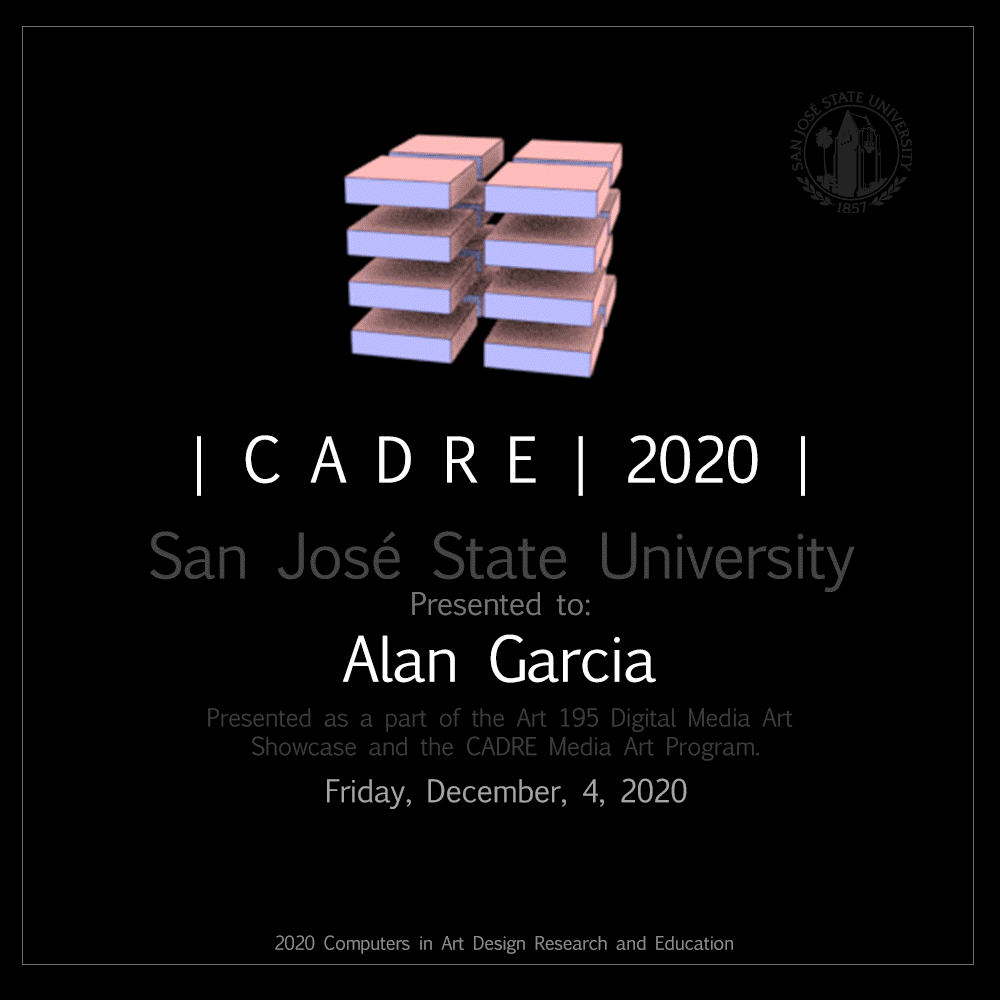
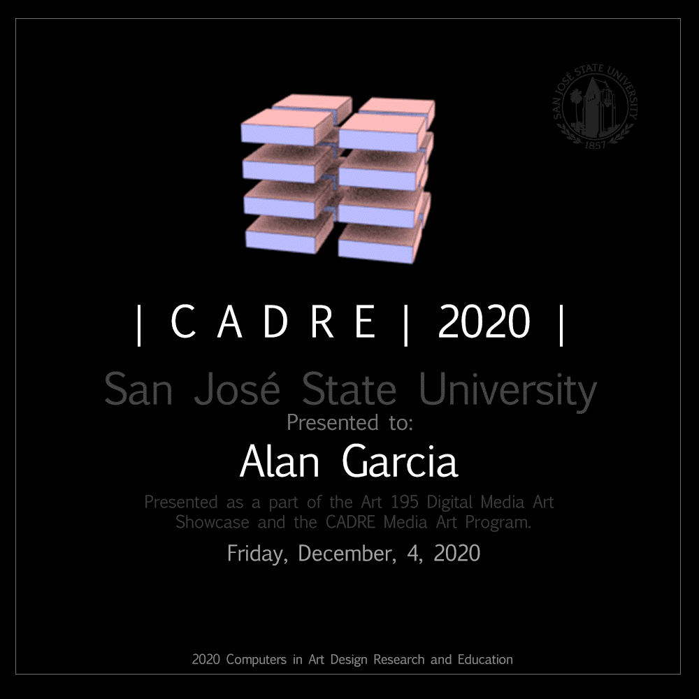

Contact Me: gladiosuno@gmail.com
About Me:
My name is Jose Alan Garcia, I was born in 1990. I was born in a small-town name Nuevo Chupicuaro, Guanajuato in Mexico. At the age of 13, I moved to the United States to find better opportunities and to have a brighter future. I began to study Digital Media in 2009 at Hartnell Collage in Salinas, Ca. I got my associates degree in 2014. During my time in Hartnell College, I got experienced in mentoring in two different events. One was for 3D modeling from a team production for Vision Ness in 2012 and the second was mentoring video editing to high schoolers in 2013. Later, I went to San Jose State University in 2016 and graduated with a bachelor’s degree in Fine Arts, Digital Media in 2020.
Artist Statement:
My art has been influenced by different medias specially the one about fantasy, as well personal experiences. I strongly focus on colors and to make my art pieces visually interesting. I am a digital artist that really enjoys using vectors. I feel that I have more control of my projects using vectors and the pieces look more smooth and less pixelated. Digital Media to me is something that make me feel that my imagination is my limit.
Curriculum Vitae:
- 2020: Graduated in San Jose State University with a BFA in Digital Media Arts.
- 2019: DMA Projects, Maker Faire, San Mateo, CA
- 2014: Graduated in Hartnell College with an AA Digital Media Arts.
- 2013: Mentor in Vdeo Editing to High Schoolers, Slainas, CA.
- 2012: Mentor in 3D amimation and Modeling, in Vision Nest.


 
